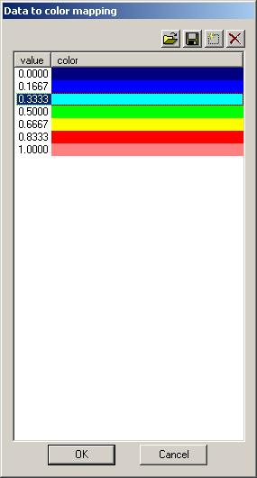
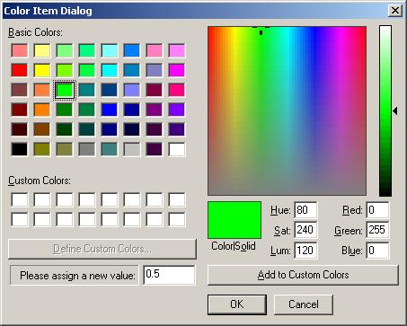
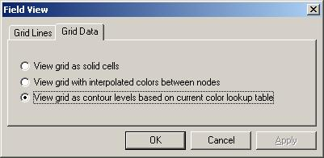

Рис 2-1. Основное окно приложения Field
Рабочая область
Панель навигации
Обзорное окно
Рабочая область
Рабочая область является основным элементом, с помощью котокого программа взаимодействует с пользователем. В ней отображена карта участка месторождения, с которой работает инженер в каждый конкретный момент времени. Имеется три режима отображения карты: контурная карта, билинейная интерполяция свойств и отображение ячейки в соответствии таблицей, сопоставляющей данные и цвет (color-to-data mapping). Графическое представление этой таблицы расположено с правой стороны рабочей области. В левом нижнем углу располагается шкала, показывающая масштаб карты. В текущей реализации все карты строятся в масштабе 1:15000 (в одном сантиметре сто пятьдесят метров). На карте обозначены места расположения скважин с автоматическим выбором оптимального расположения номеров скважин. Есть три режима оторажения сетки на которой построена геологическая модель месторождения. Первый, когда координатные линии проводятся через центр ячеек. Второй, когда координатные линии ограничивают ячейки. Третий, когда отображение координатной сетки отключено. У левой и верхней кромки окна имеются подписи к координатным линиям, обозначающие номер каждой ячейки. Отображением всех элементов пользовательского интерфейса можно управлять из контекстно-зависимого меню, которое строится динамически при нажатии правой кнопки манипулятора мышь над рабочей областью. Содержимое меню зависит от того, какие объекты лежат непосредственно под курсором мыши. Пункт меню по умолчанию вызывает диало для настройкирежима отображения рабочей области. Другие пункты меню управляют отображением вспомогательных окон для палитры и масштаба. Если нажатие кнопки происходит над скважиной, имеется пункт меню для генерации таблицы Excel с отчётом об интерпретации ГИС для этой скважины.
 
Рис 2-2. Диалоговая панель редактирования цветового отображения
При нажатии правой кнопки манипулятора мышь над областью, занятой окном палитры,
отображающей значения скалярного поля в цвет, всплывает диалоговое окно для редактирования
таблицы отображения. С помощью кнопок, расположенных в левом верхнем углу диалоговой панели
осуществляется доступ к функциям записи и считывания содержимого таблицы, а также
к функциям добавления и удаления отдельного элемента таблицы. Однократный щелчёк над цифровым
предcтавлением элемента (колонка с именем value) приводит к появлению поля редактирования,
которое позволяет задать новое значение для этого элемента таблицы. Аналогично, двойной
щелчёк над цветовым представлением данных (колонка с именем color) вызввает стандартный
диалог редактирования цвета операционной системы Windows, в который добавлена возможность
для ввода действительного числа для задания соответствия цвету. По умолчанию, между отдельными
элементами таблицы осуществляется линейная интерполяция, но имеется возможность задать
отображение цвета по логарифмическому закону, указав для какого-либо свойства признак
colormapping=1 в файле данных. При запуске программы для всех свойств резервуара устанавливается
цветовая палитра, заданная по умолчанию, и чтобы быстро вернуться к ранее отредактированному
набору цветов, осуществляется загрузка из файла. Для долговременного хранения цветовой информации
выбран формат .cpt, позаимствованный из пакета программ GMT (generic mapping tools), находящегося
в свободном распространении. В этом пакете поставляется набор стандартных таблиц, используемых
в океанографии, сейсмике, топографии и т.д. и удобные программы для манипуляции с этими
таблицами. Файл *.cpt имеет следующий формат:
| z0 | Rmin | Gmin | Bmin | z1 | Rmax | Gmax | Bmax | [A] |
| ... | ||||||||
| zn-2 | Rmin | Gmin | Bmin | zn-1 | Rmax | Gmax | Bmax | [A] |
Такой формат позволяет задать как постоянный цвет для каждого уровня, так и плавное изменение цвета между соседними уровнями. Имеется несколлько режимов отображения ячеек в рабочей области:
Рис.2-3..2-5.Режимы отображения ячеек.
Переключить режимы отображения можно в диалоге настройки режимов, всплывает в ответ на команду Properties (Свойства) из контекстно-зависимого меню в рабочей области. На другой вкладке диалога находятся переключатели, которые управляют режимами отображения сетки модели.

Рис.2-6.Настройка рабочей области.
Панель навигации
Панель навигации предназначена для выбора даты, на которую отображается состояние модели. На этой панели имеются списки нагнетательных и добывающих скважин, в которых отображаются дебиты на данную дату. Списки отсортированы по имени скважины, чтобы было удобно производить интерактивный поиск какой-то конкретной скважины. При двойном щелчке мыши над строчкой с именем заданной сквжины, центр рабочей области переносится в точку с координатами пересечения ствола скважины с кровлей модели. Аналогично, при двойном щелчке над значком скважины в рабочей области список в навигационной панели прокручивается таким образом, чтобы высветить строчку с информацией по данной скважине. Значок скважины также зависит от режима работы, используются:
 для добывающих скважин
для добывающих скважин
 для нагнетательных скважин
для нагнетательных скважин
Рис.2-7.Типы скважин.
В правой части панели управления имеется движок, с помощью которого можно выбрать определённый
слой сетки. Если в исходных данных присутствуют массивы нефтенасыщенности (soil) и
газонасыщенности (sgas), имеется возможность переключиться в режим отображения насыщенности
согласно тройной диаграмме (пункт CumulativeS меню View). Для переключения отображения
различных физических свойств из базы данных имеется комбинированный список в верхнем углу
панели управления.
Обзорное окно
Обзорное окно служит для бысрого перемещения по карте месторождения. Рабочая область выделена в виде объёмного прямоугольника. Удержирая левую кнопку мыши в нажатом положении над этим прямоугольником, можно быстро переместить рабочую область в нужную часть карты. При двойном щелчке левой кнопки мыши над обзорной картой центр рабочей области переносится в указанную точку. Перемещение ребочей области по карте также можно управлять с помощью движков прокрутки.
Created by Alexander Chupeev